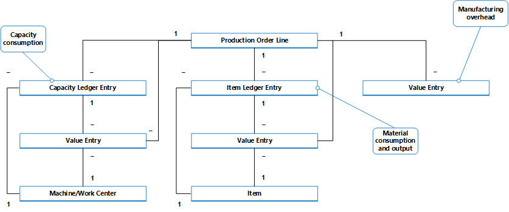

Designdetails: Fertigungsauftragsbuchung
Ähnlich wie bei der Montageauftragsbuchung werden die verbrauchten Komponenten und die verwendete Maschinenzeit konvertiert und als gefertigter Artikel ausgegeben, wenn der Fertigungsauftrag abgeschlossen wird. Weitere Informationen finden Sie unter Designdetails: Montageauftragsbuchung. Der Kostenfluss für Montageaufträge ist jedoch weniger Komplex, insbesondere da die Buchung der Montagekosten nur einmal geschieht und daher keinen WIP-Bestand generiert.
Transaktionen, die während des Fertigungsprozesses auftreten, können durch die folgenden Stufen zurückverfolgt werden:
- Einkauf von Material und anderen Fertigungseingaben.
- Konvertierung zu Umlaufbestand.
- Konvertierung zu Fertigerzeugnisbestand.
- verkauf von Fertigerzeugnissen.
Daher muss ein Produktionsbetrieb, abgesehen von regulären Lagerkonten, drei verschiedene Lagerkonten einrichten, um Transaktionen auf verschiedenen Produktionsstufen zu erfassen.
| Lagerkonto | Description |
|---|---|
| Rohmaterialkonto | Schließt die Kosten des Rohmaterials ein, das gekauft wurde, aber noch nicht der Produktion übertragen wurde. Der Saldo im Rohmaterialkonto gibt die Kosten des Rohmaterials im Lagerbestand an. Wenn Rohmaterial in der Produktionsabteilung erstellt werden, werden die Kosten der Materialien vom Rohmaterialkonto in das Unf.-Arbeit-Konto übertragen. |
| Konto für nicht abgeschlossene Arbeit | Akkumuliert die Kosten, die während der Produktion in der Buchhaltungsperiode anfallen. Das Unf.-Arbeit-Konto wird für die Kosten von Rohmaterialien, die aus dem Rohmateriallager übertragen werden, die Kosten der direkten durchgeführten Arbeit und die anfallenden Produktionsgemeinkosten belastet. Das Unf.-Arbeit-Konto wird für die Gesamtproduktionskosten der Einheiten gutgeschrieben, die in der Fabrik abgeschlossen und zum Fertigartikel-Lager umgelagert werden. |
| Fertigerzeugniswarenkonto | Dieses Konto umfasst die Gesamtproduktionskosten der Einheiten, die abgeschlossen, aber noch nicht verkauft wurden. Zum Zeitpunkt des Verkaufs werden die Kosten der verkauften Einheiten vom Fertigerzeugniswarenkonto zum Wareneinsatzkonto übertragen. |
Der Bestandswert wird berechnet, indem die Kosten aller Erhöhungen und Minderungen nachverfolgt werden, wie durch folgende Formel dargestellt:
- Bestandswert = Anfangswert Bestand + Wert aller Zunahmen - Wert aller Minderungen
Abhängig vom Typ des Lagerbestands werden Erhöhungen und Reduzierungen von unterschiedlichen Transaktionen repräsentiert.
| Zugänge | Abgänge | |
|---|---|---|
| Rohmaterialbestand | - Nettoeinkäufe von Material - Ausstoß Unterbaugruppen - Negativer Verbrauch |
Materialverbrauch |
| Produktionslager | - Materialverbrauch - Kapazitätsverbrauch - Produktionsgemeinkosten |
Istmeldungen von Endartikeln (Fertigungskosten) |
| Fertigerzeugnisse (Bestand) | Istmeldungen von Endartikeln (Fertigungskosten) | - Verkauf (Kosten verkäufter Erzeugnisse) - Negativer Ausstoß |
| Rohmaterialbestand | - Nettoeinkäufe von Material - Ausstoß Unterbaugruppen - Negativer Verbrauch |
Materialverbrauch |
Die Werte der Lagerzu- und - abgänge werden in den verschiedenen Arten von Produktionsartikel-Lagerbestand ebenso wie für gekauften Lagerbestand erfasst. Bei jeder Bestandserhöhungs- oder -minderungstransaktion werden ein Artikelposten und ein entsprechender Sachposten für den Betrag erstellt. Weitere Informationen finden Sie unter Designdetails: Planungsbuchung.
Obwohl die Werte von Transaktionen, die mit eingekauften Waren verknüpft sind, nur als Artikelposten mit zugehörigen Wertposten gebucht werden, werden Transaktionen, die mit gefertigten Artikeln verknüpft sind, als Kapazitätsposten mit zugehörigen Wertposten, zusätzlich zu den Artikelposten, gebucht.
Buchen der Struktur
Das Buchen von Fertigungsaufträgen auf das Produktionslager beinhaltet Istmeldung, Verbrauch und Kapazität.
Das folgende Diagramm zeigt die betroffenen Buchungsroutinen in Codeunit 22.

Das folgende Diagramm zeigt die Zuordnungen zwischen den resultierenden Posten und den Kostenträgern.

Der Kapazitätsposten beschreibt den Kapazitätsverbrauch in Bezug auf Zeiteinheiten, während der zugehörige Wertposten den Wert des speziellen Kapazitätsverbrauchs beschreibt.
Der Artikelposten beschreibt den Materialverbrauch oder die Ausgabe in Bezug auf Mengen, während der zugehörige Wertposten den Wert dieses bestimmten Materialverbrauch oder der Ausgabe beschreibt.
Ein Wertposten, der den WIP-Bestandswert beschreibt, kann mit einer der folgenden Kombinationen von Kostenträgern verknüpft werden:
- Eine Fertigungsauftragszeile, ein Arbeitsplatz und ein Kapazitätsposten.
- Eine Fertigungsauftragszeile, ein Artikel und ein Artikelposten.
- Nur eine FA-Zeile
Weitere Informationen darüber, wie Kosten aus der Montage und aus der Produktion in der Finanzbuchhaltung gebucht werden, finden Sie unter Designdetails: Bestandesbuchung.
Kapazitätsbuchung
Das Buchen von Istmeldungen aus dem letzten Arbeitsgang ergibt ein Kapazitätsposten für den Endartikel, zusätzlich zu dem Lagerzugang.
Der Kapazitätsposten ist ein Datensatz der Zeit, die benötigt wurde, um den Artikel zu fertigen. Der zugehörige Wertposten beschreibt die Erhöhung des WIP-Bestandswerts, der der Wert der Konvertierungskosten ist. Weitere Informationen finden Sie unter "Vom Kapazitätsposten" unter Designdetails: Konten in der Finanzbuchhaltung.
Nachkalkulation für einen Produktionsauftrag
Um Lagerbestände und Produktionskosten zu steuern, muss ein Produktionsbetrieb die Kosten von Fertigungsaufträgen messen, da der vorbestimmte Einstandspreis (fest) jedes gefertigten Artikels in der Bilanz berechnet wird. Weitere Informationen darüber, warum Fertigungsartikel die Standard-Kostenbewertungsmethode verwenden, finden Sie unter Designdetails: Kostenmethode.
Hinweis
In Umgebungen, die nicht die Standard-Kostenbewertungsmethode verwenden, werden die tatsächlichen und nicht die Standardkosten gefertigter Artikel in der Bilanz kapitalisiert.
Die tatsächlichen Kosten eines Fertigungsauftrags bestehen aus den folgenden Kostenkomponenten:
- Materialkosten gesamt
- Tatsächliche Kapazitätskosten oder Fremdarbeiterkosten
- Produktionsgemeinkosten
Diese Ist-Kosten werden im Produktionsauftrag gebucht und mit den Standardkosten verglichen, um Abweichungen zu berechnen. Abweichungen werden für jeden der Artikelkostenkomponenten berechnet: Rohmaterial, Kapazität, Zuliefereraufwand, Kapazitätsgemeinkosten und Produktionsgemeinkosten. Die Abweichungen können analysiert werden, um Probleme, wie übermäßigen Abfall bei Fertigung zu ermitteln.
In Standard-Kostenumgebungen basiert die Kalkulation eines Fertigungsauftrags auf dem folgenden Mechanismus:
Wenn der letzte Arbeitsplanvorgang gebucht wird, werden die Fertigungsauftragskosten in die Artikelposten und dem Satz von zu den Soll-Kosten gebucht.
Diese Kosten entsprechen der fertiggestellten Menge, die im Istmeldungs Buch.-Blatt gebucht ist, multipliziert mit dem Einstandspreis (fest), der aus der Artikelkarte kopiert wird. Die Kosten werden als erwartete Kosten behandelt, bis der Fertigungsauftrag fertiggestellt ist. Weitere Informationen finden Sie unter Designdetails: Erwartete Kostenbuchung.
Hinweis
Dieses unterscheidet sich von der Montageauftragsbuchung, die immer Ist-Kosten bucht. Weitere Informationen finden Sie unter Designdetails: Montageauftragsbuchung.
- Wenn der Fertigungsauftrag auf Beendet gesetzt ist, wird die Bestellung fakturiert, indem die Stapelverarbeitung Lagerreg. fakt. Einst. Preise ausgeführt wird. Deshalb wird der Gesamtbetrag des Auftrags auf der Grundlage der Standardkosten der verbrauchten Materialien und der Kapazität berechnet. Die Abweichungen zwischen dem berechneten Einstandspreis (fest) und den tatsächlichen Produktionskosten werden berechnet und gebucht.
Siehe auch
Designdetails: Lagerkostenberechnung
Designdetails: Montageauftragsbuchung
Verwalten der Lagerregulierung Finanzen
Arbeiten mit Business Central
Kostenlose E-Learning-Module für Business Central finden Sie hier